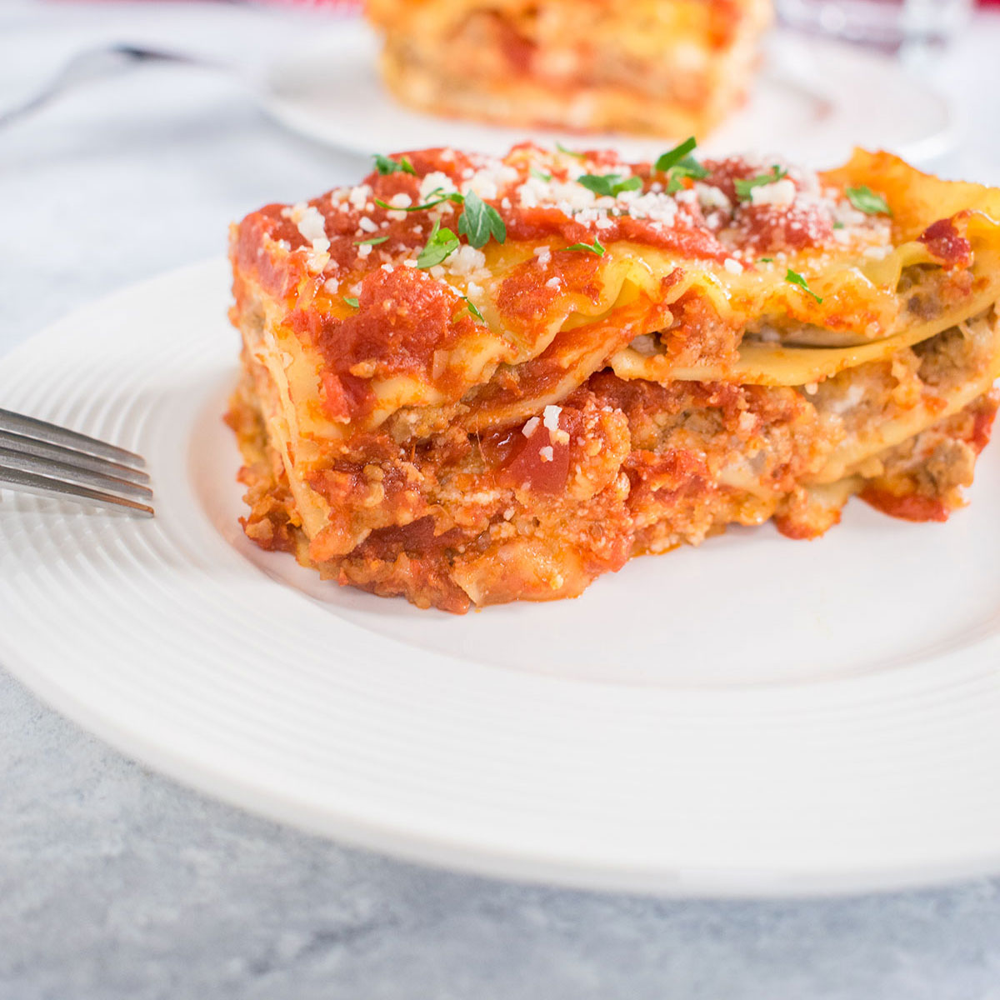

Italian Lasagna

The authentic Italian lasagna, the traditional
Lasagna Bolognese is a beloved Italian classic. Layers of creamy béchamel, rich sauce and thin pasta sheets will keep you coming back for more.
The lasagna in any Italian family is one of the most revered dishes, specially when done by the grandmothers and mothers of the family.
Ingredients
- 3/4 LB. of ground beef
- 1/4 LB. of pancetta
- 2 OZ. of carrot, chopped
- 2 OZ. of onion, chopped
- 1 1/4 CUPS of tomato purée or peeled, chopped tomatoes
- 1/2 CUP of dry white wine
- 1/2 CUP of whole milk
- 2 2/3 C. of all-purpose white flour
- 2 of large eggs
- 1/2 LB. of spinach
- 1 CUP of all-purpose flour
- 1/2 CUP of unsalted butter
- 1 QT. of fresh whole milk
- broth
- olive oil or unsalted butter
- salt
- pepper
- nutmeg